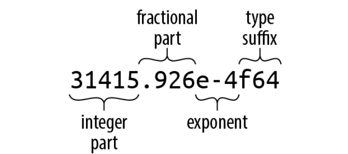
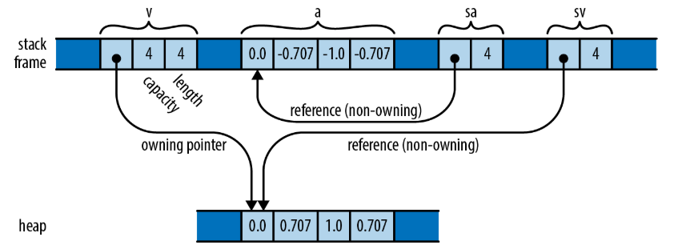
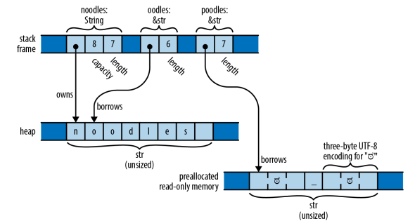

Chapter 3 基本类型
这个世界上有很多很多不同类型的书，这是一件好事。但也有很多很多不同类型的人，每个人都想读到一些不同的东西。
——Lemony Snicket
在很大程度上，Rust语言是围绕它的类型来设计的。它对高性能代码的支持源于让开发者选择不同情况下最合适的数据表示，并在简单性和成本之间取得适当的平衡。Rust的内存和线程安全也依赖于类型系统的健全性，Rust的灵活性则来自于它的泛型和trait。
这一章将介绍Rust的基本类型。这些源码级别的类型都有对应的成本和性能可预测的机器级的组件。尽管Rust并不保证它会完全按照你的要求精确地表示数据，但只有当有更可靠的改进时它才会违背你的要求。
与JavaScript或Python这种动态类型语言相比，Rust要求你事先就进行更多规划。你必须自己写出函数的参数和返回值、结构体的字段、以及一些其他结构的类型。然而，Rust的两个特性使得这些工作比你想象的要简单很多：
-
•
有了你指明的类型，Rust的类型推导将会为你推导出剩余的大部分类型。在实践中，通常只有一个类型能够满足给定的变量或表达式。在这种情况下，Rust允许你留空，或者说省略这个类型。例如，你可以像下面这样写出一个函数里的所有类型：
但这样做既杂乱又冗余。在指定了返回值类型之后，很明显v必须是Vec<i16>类型，即一个16位有符号整数的vector，因为没有其他的类型可以满足语义。并且据此可以推出vector的每个元素必须是i16类型。这恰好是Rust的类型推导适用的场景，所以你可以改为：
这两个定义是完全等价的，Rust将会生成完全相同的机器代码。类型推导可以回馈一部分动态类型语言的可读性，并且仍能在编译时捕捉到类型错误。
-
•
函数可以是泛型的：一个函数可以同时处理很多不同类型的值。
在Python和JavaScript中，所有的函数天然都是泛型的：一个函数可以操作任何类型的值，只要这个类型有函数体中需要的属性和方法。（这种特性通常被称作鸭子类型：如果它像鸭子一样叫，那它就是一只鸭子。）但正是这种灵活性也导致这些语言很难检测出类型错误，在这些语言里测试通常是唯一一种捕捉类型错误的方式。Rust的泛型函数给予了这门语言某种程度上和动态类型同样的灵活性，并且仍能在编译期捕获所有的类型错误。
除了灵活性之外，泛型函数和非泛型的函数一样高效。例如，为每个整数类型都编写一个sum函数与编写一个处理所有整数类型的泛型sum函数相比，并没有性能上的损失。我们将在第11章种详细讨论泛型函数。
这一章的剩余部分将会自上而下的覆盖Rust的类型，从最简单的数字类型例如整数和浮点数到持有多个值的复合类型：box、tuple、数组和字符串。
这里有一个Rust中类型的汇总。表3-1显示了Rust的原始类型，包括一些来自标准库的基本类型，和一些用户自定义类型的示例。
| 类型 | 描述 | 值 |
| i8, i16, i32, i64, i128, u8, u16, u32, u64, u128 | 指定位数的有符号和无符号整数 | 42, -5i8, 0x400u16, 0o100i16, 20_922_789_888_000u64, b’*’(u8字节字面量) |
| isize, usize | 有符号和无符号整数，和机器里的一个指针一样大（32位或64位） | 137, -0b0101_0010isize, 0xffff_fc00usize |
| f32, f64 | IEEE浮点数，单精度和双精度 | 1.61803, 3.14f32, 6.0221e23f64 |
| bool | 布尔值 | true, false |
| char | Unicode字符，32位 | ’*’, ’\n’, ’字’, ’\x7f’, ’\u{CA0}’ |
| (char, u8, i32) | Tuple：把类型混合在一起 | (’%’, 0x7f, -1) |
| () | “单元值”（空tuple） | () |
| struct S { x: f32, y: f32 } | 命名字段结构体 | S { x: 120.0, y: 209.0 } |
| struct T (i32, char); | 元组结构体 | T(120, ’X’) |
| struct E; | 元组结构体，无字段 | E |
| enum Attend { OnTime, Late(u32) } | 枚举，代数数据类型 | Attend::Late(5), Attend::OnTime |
| Box<Attend> | Box：持有一个堆上的值的指针 | Box::new(Late(15)) |
| &i32, &mut i32 | 共享和可变引用：生命周期不能超过所引用对象的无所有权的指针 | &s.y, &mut v |
| String | UTF-8字符串，动态大小 |
"ラーメン: ramen"
.to_string() |
| &str | str的引用：指向UTF-8字符串的无所有权的指针 | "そば: soba", &s[0..12] |
| [f64; 4], [u8; 256] | 固定长度的数组，所有元素的类型都必须相同 | [1.0, 0.0, 0.0, 1.0], [b’ ’; 256] |
| Vec<f64> | 可变长度的vector，所有元素的类型都必须相同 | vec![0.367, 2.718, 7.389] |
| &[u8], &mut [u8] | 切片的引用：指向数组或vector的一部分，包含指针和长度 | &v[10..20], &mut a[..] |
| Option<&str> | 可选值：None(无值)或Some(v)(有值，值为v) | Some("Dr."), None |
| Result<u64, Error> | 可能会失败的操作的结果：成功时是Ok(v)，失败时是Err(e) | Ok(4096), Err(Error::last_os_error()) |
| &dyn Any, &mut dyn Read | trait对象：指向一个实现了给定方法的任何值 | value as &dyn Any, &mut file as &mut dyn Read |
| fn(&str) -> bool | 函数指针 | str::is_empty |
| （闭包类型） | 闭包 | |a, b| { a*a + b*b } |
这些类型中的大部分都会在这一章中介绍，除了下面这些：
3.1 固定位数的数字类型
Rust类型系统的基础是一组固定宽度的数字类型的集合，这些类型和现代处理器中的硬件类型相匹配。
固定宽度的数字类型可能会溢出或失去精度，但它们适用于大多数的场景，并且比任意精度的整数和精确小数快几千倍。如果你需要那些类型的数字，可以在num crate找到相应的支持。
Rust的数字类型的名称遵循通用的模式，即宽度加上类型（表3-2）。
| 大小(比特数) | 无符号整数 | 有符号整数 | 浮点数 |
| 8 | u8 | i8 | |
| 16 | u16 | i16 | |
| 32 | u32 | i32 | f32 |
| 64 | u64 | i64 | f64 |
| 128 | u128 | i128 | |
| 机器字 | usize | isize |
这里，机器字是运行代码的机器上的一个指针的大小，32位或者64位。
3.1.1 整数类型
Rust的无符号整数使用全部的范围来表示正数和0（表3-3）。
| 类型 | 范围 |
| u8 | 0到（0到255） |
| u16 | 0到（0到65,535） |
| u32 | 0到（0到4,294,967,295） |
| u64 | 0到（0到18,446,744,073,709,551,615或1万8千亿） |
| u128 | 0到（0到大约） |
| usize | 0到或 |
Rust的有符号整数使用二进制补码表示法，使用和无符号类型相对应的位模式来表示一个包含正数和负数的范围（表3-4）。
| 类型 | 范围 |
| i8 | 到（-128到127） |
| i16 | 到（-32,768到32,767） |
| i32 | 到（-2,147,483,648到2,147,483,647） |
| i64 | 到（-9,223,372,036,854,775,808到9,223,372,036,854,775,807） |
| i128 | 到（大约到） |
| isize | 到，或者到 |
Rust使用u8类型来表示一个字节的值。例如，从二进制文件或者套接字读取数据就会返回u8类型的数据流。
与C和C++不同，Rust区分了字符和数字类型：char不是u8，也不是u32（尽管它是32位）。我们将会在字符这一节介绍Rust的char类型。
usize和isize类似于C和C++中的size_t和ptrdiff_t类型。它们的位数和目标机器上地址空间的位数相同：在32位架构上就是32位，在64位架构上就是64位。Rust要求数组索引为usize类型的值。数组或vector或其他任何含有多个元素的数据结构的长度都是usize类型。
Rust中的整数字面量可以有一个后缀来指示类型：42u8是一个u8类型的值，1729isize是一个isize类型的值。如果一个整数字面量没有类型后缀，Rust将会延迟决定它的类型，直到可以从它的使用中推断出它的类型：存储到一个已知类型的变量中、作为参数传递给一个参数类型已知的函数、和一个已知类型的值比较、以及类似的情况。如果到最后还是有很多类型可以满足，此时如果i32是其中一种可能，Rust将推断它为i32类型。否则，Rust会报歧义错误。
前缀0x, 0o, 0b分别表示十六进制、八进制、二进制字面量。
为了让长数字更可读，你可以在数字中间插入下划线。例如，你可以把最大的u32值写作4_294_967_295。下划线放置的位置并不重要，所以你可以每四位插入一个下划线来把十六进制和二进制数字分组，例如0xffff_ffff或者在最后插入下划线分隔类型后缀，例如127_u8。表3-5给出了一些整数字面量的例子。
| 字面量 | 类型 | 十进制值 |
| 116i8 | i8 | 116 |
| 0xcafeu32 | u32 | 51966 |
| 0b0010_1010 | 推断 | 42 |
| 0o106 | 推断 | 70 |
尽管数值类型和char类型是不同的，Rust确实提供了字节字面量：很像字符字面量的u8值：b’X’代表字符X的ASCII码值，但是是u8类型的值。例如，因为A的ASCII码值是65，字面量b’A’和65u8是等价的。只有ASCII字符可以出现在字节字面量中。
这里有一些不能用单个字符表示的字符，因为它们要么会导致歧义要么很难看出来。表3-6中的字符只能用反斜杠转移的方式写出来。
| 字符 | 字节字面量 | 等价的数字值 |
| 单引号，’ | b’\’’ | 39u8 |
| 反斜杠，\ | b’\\’ | 92u8 |
| 换行 | b’\n’ | 10u8 |
| 回车 | b’\r’ | 13u8 |
| 制表符 | b’\t’ | 9u8 |
对于那些难以写出或看出的字符，你可以用它们的十六进制码代替。一个字节字面量的形式是b’\xHH’，其中HH是两个十六进制的数字，代表值是HH的字节。例如，你可以将ASCII的“escape”字符的字节字面量写作b’\x1b’，因为“escape”的ASCII码是27，也就是16进制的1B。因为字节字面量只是u8类型值的另一种表示方式，考虑使用数字字面量可能可读性会更强：只有当你想表示ASCII码时b’\x1b’才会比27更有意义。
你可以将一种整数类型转换为另一种整数类型。我们将会在类型转换这一节中介绍转换的原理，这里有一些例子：
assert_eq!( 10_i8 as u16, 10_u16); // 在类型的表示范围内 assert_eq!( 2525_u16 as i16, 2525_i16); // 在类型的表示范围内 assert_eq!( -1_i16 as i32, -1_i32); // 符号扩展 assert_eq!(65535_u16 as i32, 65535_i32); // 0扩展 // 转换一个超出目标类型范围的值 // 等价于原值对2^N取模 // N是目标类型的位数 // 这有时也被称为"截断" assert_eq!( 1000_i16 as u8, 232_u8); assert_eq!(65535_u32 as i16, -1_i16); assert_eq!( -1_i8 as u8, 255_u8); assert_eq!( 255_u8 as i8, -1_i8);标准库提供一些整数的方法来进行操作。例如：
你可以在在线文档中找到这些。但是注意，文档中i32（原始类型）和模块导入的类型（搜索std::i32）有不同的单独页面。
在实际编码时，你不需要像我们在这里一样写出类型后缀，因为上下文会自动推断出类型。当推断不出来时，错误信息可能会让你很惊讶。例如，下面的代码不能编译：
这可能有点迷惑：所有的整数类型都有abs方法，所以问题在哪呢？出于技术原因，Rust需要先知道某个值的类型，然后才能调用它的方法。只有当所有的方法调用都被解析之后仍然存在歧义才会使用默认的i32类型，而在这里，在解析abs方法时就需要知道-4的类型，默认推导为i32的规则在此时不能生效。解决方法是指明类型，要么加上类型后缀，要么使用类型特定的函数：
注意函数调用的优先级高于一元前缀运算符，所以当对负数调用方法时一定要小心。如果这个地方第一个表达式里-4_i32两侧没有括号，-4_i32.abs()将会对4调用abs方法，返回正数4，然后求负数返回-4。
3.1.2 Checked、Wrapping、Saturating、Overflowing算术
当整数运算溢出时，如果是在debug模式下Rust会panic。在release模式下，运算结果会回环(wraps around)：它会返回正确的值对结果类型能表示的范围取余之后的结果。（这两种情况下，溢出都不像在C和C++中一样是未定义行为）。
在release模式下，溢出时乘法会回环成负数，然后循环会无限执行。
如果默认行为不是你希望的结果，整数类型提供了一个方法让你指定想要做什么。例如，下面的代码在任何构建模式下都会panic：
这些整数运算的方法可以被分为四个通用的类别：
-
•
Checked操作返回一个结果的Option值：如果运算结果可以被结果类型正确表示就返回Some(v)，否则返回None。例如：
// 10和20的结果可以用u8表示。assert_eq!(10_u8).checked_add(20), Some(30));// 不幸的是，100和200的和不能用u8表示。assert_eq!(100_u8).checked_add(200), None);// 求和，如果溢出就panic。let sum = x.checked_add(y).unwrap();// 奇怪的是，在一种特定情况下，有符号除法也可能会导致溢出。// 一个有符号整数能表示-2^(n-1)，但不能表示2^(n-1)。assert_eq!((-128_i8).checked_div(-1), None); -
•
Wrapping操作返回正确的值对结果类型能表示的范围的余数：
正如解释的那样，这就是release模式下算术操作的行为。使用这种写法的好处是在所有的构建模式下代码的行为都一致。
- •
-
•
Overflowing操作返回一个tuple (result, overflowed)，其中result是回环版本的方法返回的结果，而overflowed是一个指示是否发生溢出的bool值：
overflowing_shl和overflowing_shr稍微有些偏离这个模式：只有当位移距离大于等于类型的位宽度时overflowed才为true。实际的移位距离等于要求的距离对位宽度取余后的结果：
表3-7中列出了以checked_，wrapping_，saturating_，overflowing_为前缀的方法。
| 操作 | 名称后缀 | 示例 |
| 加法 | add | 100_i8.checked_add(27) == Some(127) |
| 减法 | sub | 10_u8.checked_sub(11) == None |
| 乘法 | mul | 128_u8.saturating_mul(3) == 255 |
| 除法 | div | 64_u16.wrapping_div(8) == 8 |
| 取余 | rem | (-32768_i16).wrapping_rem(-1) == 0 |
| 负数 | neg | (-128_i8).checked_neg() == None |
| 绝对值 | abs | (-32768_i16).wrapping_abs() == -32768 |
| 指数 | pow | 3_u8.checked_pow(4) == Some(81) |
| 左移 | shl | 10_u32.wrapping_shl(34) == 40 |
| 右移 | shr | 40_u64.wrapping_shr(66) == 10 |
3.1.3 浮点数
Rust提供IEEE的单精度和双精度浮点数。这两个类型还包括正无穷、负无穷、正0、负0和非数值。（表3-8）
| 类型 | 精度 | 范围 |
| f32 | IEEE单精度浮点数（至少6位十进制数字） | 大约到 |
| f64 | IEEE双精度浮点数（至少15位十进制数字） | 大约到 |
Rust的f32和f64分别对应C和C++（如果实现支持IEEE浮点数的话）以及Java（总是使用IEEE浮点数）里的float和double类型。
浮点数字面量的一般形式如图3-1。

整数部分之后的部分都是可选的，但小数部分、指数、或者类型后缀至少需要有一个，才能和整数字面量区分开。小数部分可以只有一个单独的小数点，因此5.是一个有效的浮点数。
如果一个浮点数字面量缺少类型后缀，和处理整数一样，Rust会检查上下文来查看这个值是如何使用的。如果最后它发现两种浮点数类型都可以满足语义，那么它会默认选择f64。
为了实现类型推导，Rust把整数字面量和浮点数字面量区分为不同的种类：它从来不会把一个浮点数类型推断为整数类型，反之亦然。表3-9展示了一些浮点数字面量的例子。
| 字面量 | 类型 | 数值 |
| -1.5625 | 自动推断 | |
| 2. | 自动推断 | 2 |
| 0.25 | 自动推断 | |
| 1e4 | 自动推断 | 10,000 |
| 40f32 | f32 | 40 |
| 9.109_383_56e-31f64 | f64 | 大约是 |
f32和f64类型还关联了IEEE要求的特殊常量值例如INFINITY、NEG_INFINITY（负无穷）、NAN（非数值）、MIN和MAX（最小和最大的有限值）：
f32和f64类型提供了完整的数值计算的方法；例如，2f64.sqrt()是2的平方根。还有一些示例：
再重复一次，方法调用的优先级高于前缀运算符，因此对负数调用方法时确保要用括号括起来。
std::f32::consts和std::f64::consts模块提供了常用的数学常数，例如E、PI、2的平方根。
如果要查找浮点数的文档，记得文档里既有类型的文档，名称叫“f32(primitive type)”和“f64(primitive type)”，又有模块的文档，名称叫std::f32和std::f64。
和整数一样，在实际编码时通常你不需要写出浮点数字面量的类型后缀，但如果你要写，那么只需要指明变量和函数其中一个类型即可：
和C和C++不同，Rust中几乎没有隐式类型转换。如果一个函数接收f64类型的参数，传递i32的值作为参数将是一个错误。事实上，Rust甚至不允许从i16到i32这样的隐式转换，即使每一个i16值也都是一个合法的i32值。但你总是可以使用as运算符来进行显式转换：i as f64，或者x as i32。
缺少隐式类型转换导致Rust的表达式可能会比C和C++中类似的表达式更加冗长。然而，隐式整数转换经常导致bug和安全漏洞。尤其是用来表示内存中某个东西的长度的整数，可能会导致意外的溢出。在我们的实践中，在Rust中显式写出类型转换可以提醒我们可能忽略的问题。
我们会在类型转换一节中介绍转换的原理。
3.2 布尔类型
Rust的布尔类型bool只有两个值：true和false。比较运算符例如==和<会产生bool类型的结果：2 < 5的结果是true。
许多语言都很宽容，允许在需要布尔值的上下文中使用其他类型：C和C++隐式把字符、整数、浮点数和指针转换为布尔值，因此它们可以直接用作if或while语句的条件。Python还允许string、list、字典、甚至集合用作布尔值，如果不为空时视为true。然而Rust非常严格：像if和while这样的控制流的条件必须是bool表达式，短路求值运算符&&和||也是这样。你必须写if x != 0 { ... }，而不能写if x { ... }。
然而，as不能反过来把整数值转换为bool值。你必须显式写出比较运算例如x != 0。
尽管bool类型只需要单个比特来表示，Rust还是使用整个字节来表示bool，因此你可以创建指向它的指针。
3.3 字符
Rust的字符类型char代表一个单独的Unicode字符，是一个32位的值。
Rust使用char表示单个字符，但使用UTF-8编码字符串和文本流。因此，String表示它的文本是一个UTF-8字节序列，而不是字符的数组。
字符字面量是被单括号包围的单个字符，例如’8’或’!’。你可以使用Unicode范围内的任何字符：’錆’是一个char字面量代表日语汉字中的sabi（rust）。11 1 译者注：看起来这个字符可能无法正常显示，可以在源码里看到这个字符原本的样子。
和字节字面量一样，一些字符需要反斜杠转义（表3-10）。
| 字符 | Rust字符字面量 |
| 单引号，’ | ’\’’ |
| 反斜杠，\ | ’\\’ |
| 换行 | ’\n’ |
| 回车 | ’\r’ |
| 制表符 | ’\t’ |
如果你喜欢的话，你可以以十六进制的方式写出一个字符的Unicode编码：
-
•
如果字符的码点在U+0000到U+007F之间（可以据此判断是否在ASCII字符集之中），那么你可以将字符写作’\xHH’，HH是一个两位的十六进制数字。例如，字符字面量’*’和’\x2A’是等价的，因为字符*的码点是42，十六进制是2A。
-
•
你可以用’\uHHHHHH’形式写出任何Unicode字符，HHHHHH是一个最长6位的十六进制数字，可以用下划线分隔。22 2 译者注：此处原文中给了一个例子，但译者不知道该怎么打出卡纳达语里的字符，复制粘贴也不行，就省略了这个例子。
一个char总是存储一个在0x0000到0xD7FF或0xE000到0x10FFFF之间的Unicode码点。一个char绝不会在两个范围之间（即0xD800到0xDFFF），也不会超出Unicode的编码空间（即大于0x10FFFF）。Rust使用类型系统和动态检查来确保char值总是在允许的范围内。
Rust永远不会进行char和其他任何类型之间的隐式转换。你可以使用as转换运算符来把char转换为整数类型，对于小于32位的类型，字符值的高位会被截断：33 3 译者注：这个例子中也省略了卡纳达语字符相关的内容。
另外，u8是唯一可以用as运算符转换成char的整数类型：Rust只会对开销很低并且不可能失败的转换使用as运算符，但任何u8之外的整数类型都包含不是有效的Unicode码点的值，因此这些转换需要运行时检查。所以，标准库提供了函数std::char::from_u32接受任何u32值，并返回Option<char>：如果u32的值不是合法的Unicode码点，from_u32会返回None；否则，它会返回Some(c)，c就是作为转换结果的char。
标准库为字符类型提供了一些有用的方法，你可以在文档中的“char(primitive type)”和模块“std::char”的页面中查找这些方法。例如：
当然，单个字符显然没有字符串和文本流有趣。我们将会在字符串类型中介绍Rust的标准String类型和常用的文本处理操作。
3.4 元组
元组是两个、或三个、四个、五个、……不同类型的值的组合。你可以将元组看作被逗号分隔和括号包围的元素序列。例如，("Brazil", 1985)是一个元组，它的第一个元素是一个静态分配的字符串，第二个元素是一个整数，它的类型是(&str, i32)。给定一个元组值t，你可以通过t.0、t.1、……来访问它的元素。
某种程度上，元组类似于数组：这两个类型都代表一系列有固定顺序的值。许多编程语言合并或结合了这两种概念，但在Rust中，它们是完全独立的。一方面，元组的每个元素可以拥有不同的类型，而数组的所有元素必须有相同的类型。另外，元组只允许常数索引，例如t.4。你不可能写t.i或者t[i]来获取第i个元素。
Rust代码中经常使用元组类型来返回多个值。例如，字符串切片中的split_at方法（用于将一个字符串切分为两半并返回）被声明为类似如下形式：
返回类型(&str, &str)是两个字符串切片组成的元组。你可以使用模式匹配语法来把返回的元素赋值给不同的变量：
这比下边的等价代码可读性更强：
你也可以将元组视为一种极简的结构体类型。例如，在第2章的曼德勃罗集程序中，我们需要向函数传递要绘制的图片的宽度和高度。我们可以声明一个有width和height成员的结构体，但这么简单的事没有必要搞得这么复杂，因此我们用了一个元组：
参数bounds的类型是(usize, usize)，一个有两个usize值的元组。诚然，我们可以直接使用单独的width和height参数，生成的机器代码也会完全相同。这么写的目的只是想表明，我们把图片的大小看成一个值，而不是两个值，使用元组的写法可以清晰的表现出这一点。
元组的另一个常见用法是0元组()。这通常被称为单元类型因为它只有一个取值，也写作()。Rust会在上下文要求某种类型，但没有有意义的值要传递的情况下使用单元类型。
例如，一个不返回值的函数的返回类型是()。标准库中的std::mem::swap函数没有有意义的返回值；它只是交换两个参数的值。std::mem::swap的声明如下：
<T>意味着swap是泛型的：你可以将它用于任何类型T的引用。但签名中省略了swap的返回类型，这实际上是返回单元类型的缩写：
与此类似，我们之前提到的write_image中的返回值类型是Result<(), std::io::Error>，这意味着如果出错时函数返回std::io::Error类型的值，如果成功时返回无值。
如果你想的话，你可以在元组的最后一个元素之后加上一个逗号：类型(&str, i32,)和
(&str, i32)是等价的，("Brazil", 1985,)和("Brazil", 1985)也是。Rust允许任何逗号分隔的值列表最后加上一个额外的逗号：函数参数、数组、结构体和枚举定义，等等。这对人类来说可能看起来很奇怪，但当需要在最后添加或删除条目时会变得方便一些。
为了一致性，还有只包含单个值的元组。字面量("lonely hearts",)是一个包含单个字符串的元组，它的类型是(&str,)。这里，最后的逗号是必须的，这是为了和单纯的用括号把表达式括起来相区分。
3.5 指针类型
Rust有几个表示内存地址的类型。
这是Rust和其他大多数有垃圾回收语言的不同之处。在Java中，如果class Rectangle包含一个字段Vector2D upperLeft，那么upperLeft实际上是对另一个单独创建的Vector2D对象的引用。在Java中一个对象从来不会真的包含其他对象。
Rust里则不同。Rust被设计为尽量减少内存分配。默认情况下Rust里是值嵌套的，值((0, 0), (1440, 900))被存储为四个相邻的整数。如果你把它赋值给一个局部变量，那么你将得到一个4个整数大小的局部变量，不会在堆上分配任何内存。
这有助于提高内存效率，但它会导致当Rust程序需要指向其他值的指针时，必须显式使用指针类型。好消息是safe Rust里的指针类型有一些约束来保证不会出现未定义行为，因此Rust中的指针比C++中的更容易正确使用得多。
我们将会在这里讨论三种指针类型：引用、box、unsafe指针。
3.5.1 引用
一个&String（读作“ref String”）类型的值是一个String值的引用，一个&i32类型的值是一个i32值的引用，等等。
把引用想象成Rust的基本指针类型可以让我们更容易理解。在运行时，一个i32的引用是一个单独的机器字，里面存储的是指向的i32值的地址，可能在栈上也可能在堆上。表达式&x产生一个x的引用；在Rust的术语中，我们称它借用了x的引用。给定引用r，表达式*r就是r指向的值。这些类似于C和C++中的&和*运算符。和C指针类似，当引用离开作用域时并不会自动释放任何资源。
然而和C指针不同的是，Rust的引用永远不为空：在safe Rust中没有任何办法产生一个空引用。而且和C指针不同，Rust通过追踪值的所有权和生命周期，在编译期就可以杜绝悬垂指针、double free和指针失效的情况。
Rust的指针有以下两种类型：
&T
一个不可变的共享引用。你可以同时拥有同一个值的多个共享的引用，但它们都是只读的：修改它们指向的值是禁止的，就像C中的const T*一样。
&mut T
一个可变的、独占的引用。你可以读写它指向的值，类似于C中的T*。但只要这个引用存在，你不能再持有任何这个值的其他任何类型的引用。事实上，这时候你唯一可以访问这个值的方法就是通过这个可变引用。
Rust使用这种方式来区分共享和可变的引用，以此来强制执行“单个写者或多个读者”规则：要么你可以读写值，要么它只能被任何数量的读者共享。这种分隔由编译器检查来强制执行，它是Rust安全保证的核心。第5章解释了Rust中使用安全引用的规则。
3.5.2 Box
t的类型是(i32, &str)，因此b的类型是Box<(i32, &str)>。调用Box::new会在堆上分配足够的内存来存储元组。当b离开作用域时，内存会被立即释放，除非b被move了——例如被返回了。move对Rust处理堆上分配的值的方式至关重要，我们将在第4章详解介绍这一点。
3.5.3 原始指针
Rust也有原始指针类型*mut T和*const T。原始指针类似于C++中的指针。使用原始指针是不安全的，因为Rust无法追踪它指向的到底是什么。例如，原始指针可能是空、或者可能指向被释放的内存、或者现在指向一个和之前不同类型的值。所有C++中经典的指针错误都有可能。
然而，你只能在unsafe块中解引用原始指针。unsafe块是Rust中的可选机制，它的安全性取决于你自己。如果你的代码没有unsafe块（或者有unsafe块但里面的代码都是完全正确的），那么整本书中强调的安全性保证都适用。细节见第22章。
3.6 数组、vector和切片
Rust有三种表示一系列值的类型：
-
•
类型[T; N]表示一个有N个元素的数组，每个元素的类型都是T。每个数组的长度必须在编译期已知，并且是类型的一部分。你不能添加新元素或者缩减元素。
-
•
类型Vec<T>，是类型T的向量。它是动态分配、可增长的类型T的值的序列。vector的元素存储在堆中，所以你可以按需更改vector的大小：可以添加新的元素、附加其它vector、删除元素等。
-
•
类型&[T]和&mut [T]分别是类型T的共享切片和可变切片，它们是数组或vector等其它值中的一部分元素的引用。你可以把切片当做一个指向第一个元素的指针再加上一个可访问的元素数量。一个可变的切片&mut [T]让你可以读取并修改元素，但不能被共享；共享的切片&[T]允许你在多个读者间共享数据，但不能修改元素。
如果v是这三种类型中的任意一种，那么表达式v.len()返回v中元素的数量，v[i]返回v中的第i+1个元素。第一个元素是v[0]，最后一个元素是v[v.len() - 1]。Rust会检查i是否在范围内，如果超过了长度范围，表达式会panic。v的长度可能是0，这时任何索引操作都会panic。i必须是usize类型的值，你不能使用任何其它整数类型当作索引。
3.6.1 数组
创建一个数组有几种方式。最简单的方式是用方括号括起来的一系列值：
如果想要初始化定长数组，可以使用[V; N]的写法，其中V是每一个元素的初始值，N是长度。例如，[true; 10000]代表含有10,000个bool类型元素的数组，每个元素都被初始化为true：
你会发现这种语法还可以用于创建固定大小的缓冲区：[0u8; 1024]可以用作一个1K的缓冲区，所有字节全部初始化为0。Rust里没有创建未初始化数组的语法。（更广泛的说，Rust保证代码不可能访问任何未初始化的值。）
一个数组的长度是类型的一部分，并且在编译期就已经固定。如果n是一个变量，你不能用[true; n]这种语法来得到一个有n个元素的数组。当你需要运行时才能确定长度的数组时，使用vector来代替。
数组有一些有用的方法——迭代元素、搜索、排序、填充、过滤等等——事实上这些方法都是切片的，而不是数组的。但在搜索方法时Rust会隐式的把数组的引用转换为切片，因此你可以直接用数组调用切片的方法：
这里，sort方法实际上是为切片定义的，但因为它是以调用者的引用为参数，所以Rust隐式的创建了一个引用整个数组的&mut [i32]类型的切片，然后在这个切片上调用sort方法。事实上，我们之前提到的len方法最早的时候也是切片的方法。我们将在切片这一节中介绍切片。
3.6.2 vector
一个Vec<T>是一个长度可变的类型T的数组，它的元素都存储在堆上。
有几种创建vector的方法。最简单的方法是使用vec!宏，这种语法很像数组字面量：
当然，这是vector，不是数组，因此我们可以动态添加元素：
你也可以再次使用类似于数组字面量的语法来创建重复给定值若干次的vector：
vec!宏等价于调用Vec::new创建一个新的空vector，然后向其中添加元素：
通常使用collect时你需要给出类型，因为它可以生成不同类型的集合，不只是vector。但指明了v的类型之后，我们需要的集合类型就没有歧义了。
类似于数组，你也可以对vector调用切片的方法：
这里，reverse方法实际上是为切片定义的，但这里调用隐式地借用了vector的&mut [&str]切片，然后对它调用了reverse。
Vec是Rust中不可或缺的一个类型——它被用在几乎所有需要动态大小列表的场景——所以有很多其他的方法创建构造新的vector或扩展现有的列表，我们将在第16章介绍它们。
一个Vec<T>由3个值组成：一个指针指向堆上存储元素的缓冲区，这个缓冲区的所有权属于这个Vec<T>；缓冲区可以存储的元素的数量；它现在实际已经拥有的元素的数量（也就是它的长度）。当缓冲区的的元素到达最大容量时，继续添加元素会导致vector重新分配一个更大的缓冲区，再把已有元素都拷贝过去，然后更新vector的指针和容量，最后释放旧的缓冲区。
如果你提前知道vector需要存储的元素的数量，你可以使用Vec::with_capacity来创建一个从一开始就拥有足以存下它们的缓冲区的vector；然后你可以向vector中添加元素，并且不会导致重新分配内存。vec!宏就使用了类似这样的方法，因为它知道最终的vector会有多少个元素。注意这只决定了vector的初始大小，如果你继续添加元素，vector会像通常一样变大。
很多库函数都在寻找使用Vec::with_capacity代替Vec::new的机会。例如，在collect的例子中，迭代器0..5提前知道它会产生5个值，collect函数就可以利用这一点提前分配足够容量的vector。我们将在第15章中介绍这些。
就像len方法会返回持有的元素数量一样，它的capacity方法会返回它在不重新分配的前提下能存储的最大元素数量：
最后打印出的容量并不保证是4，但通常至少是3，因为vector已经持有3个元素了。
你可以在vector中任意插入或移除元素，尽管这些操作会移动修改位置前面或者后面的元素，因此如果vector很长的时候这些操作会很慢：
你可以使用pop方法移除最后一个元素并返回它。更确切地说，从Vec<T>中弹出只会返回一个Option<T>：如果vector已经为空是None，如果最后一个元素是v就是Some(v)：
你可以使用for循环来迭代vector：
用一些编程语言的名字来运行这个程序，你就会发现有趣的地方：
终于，我们得到了术语函数式语言的一个令人满意的定义。44 4 译者注：此处作者应该是开玩笑。
尽管Vec非常重要，但它只是Rust中定义的一个普通类型，不是语言内建的类型。我们将在第22章中介绍实现这样的类型的技术。
3.6.3 切片
一个切片写作[T]，没有长度。它表示数组或vector的一部分。因为切片可以是任意长度，因此切片不能直接存储在变量中或者作为参数传递。切片必须通过引用传递。
切片的引用是胖指针：一个包含指向切片中第一个元素的指针和切片中元素数量的双字值。
假设你正在运行下列代码：
在最后两行中，Rust自动把&Vec<f64>和&[f64; 4]转换成了切片的引用。
这段代码运行完后，内存布局类似图3-2中所示：

一个普通的引用是一个指向单个值的无所有权指针，而一个切片的引用是一个指向内存中连续的范围的指针。这使得如果你想写一个处理数组或vector的函数，那么切片引用将是一个很好的选择。例如，这里有一个函数打印出一系列值，每个单独一行：
因为这个函数的参数是切片引用，你可以像示例中一样传递数组或者vector的引用。事实上，很多你可能以为是数组或vector的方法实际上都是切片的方法：例如sort和reverse方法，实际上都是切片类型[T]的方法。
你可以通过索引一个数组或vector或一个现有切片的一个范围来得到一个切片引用：
类似于普通的数组访问，Rust会检查索引的有效性。尝试借用超过数据结尾的切片会导致panic。
因为切片类型总是以引用的方式出现，我们也经常用“切片”来指代&[T]或&str这样的类型，用最短的名称表达最常用的概念。
3.7 字符串类型
熟悉C++的程序员应该都知道C++里有两种字符串类型：字符串字面量的类型const char *，标准库里还提供了一个类std::string，用于在运行时动态创建字符串。
Rust的设计与此类似。在这一节中，我们将首先展示字符串字面量的所有写法，然后介绍Rust的两种字符串类型。我们将在第17章中详细讨论字符串和文本的处理。
3.7.1 字符串字面量
在字符串字面量里和char字面量里不同的一点是，单引号不需要使用反斜杠转义，但双引号需要。
一个字符串可以占多行：
这个字符串里的换行符被包括在字符串里，因此也会被输出。第二行开头的空格也是。
如果字符串中的一行以反斜杠结尾，那么换行符和下一行的前导空格就会被丢弃掉：
这段代码会打印出单行文本。打印出的字符串里“and”和“there”之间有一个空格，因为第一行的反斜杠前边有一个空格，而连字符和“more”之间没有空格。
在少数情况下，在字符串里用反斜杠转义反斜杠是一件很烦的事情。（典型的例子就是正则表达式和Windows的路径）对于这种情况，Rust提供了原始字符串，原始字符串用小写字母r来标记。原始字符串中的所有反斜杠和空白字符都被原样包含在字符串里，不会识别任何转义：
你不能通过在前面加上反斜杠来把双引号包含在原始字符串中——记住，我们说的是不会识别任何转义。然而，这种情况也有解决的方法。原始字符串的开头和结尾可以用任意相同数量的井号来标记：
您可以根据需要添加井号，以明确原始字符串的结束位置。
3.7.2 字节字符串
以b前缀开头的字符串字面量是字节字符串。这种字符串实际上是u8值的切片——也就是字节流——而不是Unicode文本：
method的类型是&[u8; 3]：它是一个有三个字节的数组的引用。它没有任何我们之后要讨论的字符串的方法。它和字符串最像的地方就是我们创建它时用的语法。
字节字符串可以使用我们之前使用过的所有语法：它也可以跨多行、使用反斜杠转义、使用反斜杠连接多行。还有以br"开头的原始字节字符串。
字节字符串不能包含任意Unicode字符，它只能包含ASCII和用\xHH形式表示的字符。
3.7.3 内存中的字符串
Rust的字符串是Unicode字符的序列，但它并不是作为char的数组存储在内存中。事实上它使用UTF-8编码存储，这是一种可变长度的编码。每一个ASCII字符被存储为一个字节，其他字符可能会占据多个字节。
图3-3显示了下面代码创建的String和&str：55 5 译者注：因为不知道怎么打出来这些卡纳达语字符，所以用“某些卡纳达语字符”代替。

一个String有一个大小可变的缓冲区来存储UTF-8文本。缓冲区是在堆上分配的，所以它可以按需或按照要求调整缓冲区大小。在这个例子中，noodles是一个拥有8个字节大小的缓冲区的String，其中7个字节已经被使用。你可以将String想象为保证内容是有效UTF-8编码的Vec<u8>；事实上，String就是这么实现的。
一个&str（读作“stir”或者“字符串切片”）是一个指向其他值拥有的UTF-8文本的引用：它“借用”了这段文本。在这个例子中，oodles是一个指向noodles所持有的文本中的最后六个字节的&str，因此它表示文本“oodles”。就像其他切片引用一样，&str是一种胖指针，包括实际数据的地址和长度。你可以将&str看作一个保证内容为合法的UTF-8编码的&[u8]。
字符串字面量是一个指向预先分配好内存的文本的&str，实际的文本通常和程序的机器码一起存储到只读的内存区域。在之前的例子中，poodles是一个字符串字面量，指向程序运行时就已经被创建好并且持续到程序退出的7个字节。
一个String或&str的len()方法返回它的长度。但这个长度是以字节为单位，而不是以字符为单位：
不能修改&str：
要在运行时创建新的字符串，要使用String。
类型&mut str确实存在，但它并不好用，因为几乎所有对UTF-8的操作都可能改变字节长度，而一个切片不能重新分配它指向的参照物。事实上，&mut str唯一能做的操作是make_ascii_uppercase和make_ascii_lowercase，这两个操作在原址修改文本，并且只影响单个字节的字符。
3.7.4 String
&str和&[T]很像：都是一个指向某些数据的胖指针。String类似于Vec<T>，如表3-11所示。
| Vec<T> | String | |
| 自动释放缓冲区 | 是 | 是 |
| 可增长 | 是 | 是 |
| 有::new()和::with_capacity()类型关联函数 | 是 | 是 |
| .reserve()和.capacity()方法 | 是 | 是 |
| .push()和.pop()方法 | 是 | 是 |
| 范围语法v[start..stop] | 是，返回&[T] | 是，返回&str |
| 自动转换 | &Vec<T>到&[T] | &String到&str |
| 继承方法 | 从&[T] | 从&str |
类似于Vec，每个String都有它自己的在堆上分配的缓冲区，这个缓冲区不和其他任何String共享。当一个String变量离开作用域时，缓冲区会自动释放，除非String被move了。
有几种方式创建String：
-
•
.to_string()方法把&str转换为一个String，这会拷贝字符串：
.to_owned()方法做同样的事，你可能会看到它用同样的方式使用。它也可以用于其他类型，正如我们将在第13章讨论的一样。
- •
- •
有时你需要选择使用&str还是String。第5章将详细介绍这个问题。现在你只需要知道&str可以指向任何字符串的任何切片，不管是字符串字面量（存储在可执行文件中）还是String（在运行时分配和释放）。这意味着当允许调用者传递任何类型的字符串时&str更适合用作参数的类型。
3.7.5 使用字符串
字符串支持==和!=运算符。只有当两个字符串含有内容和顺序都完全相同的字符时两个字符串才相等（和它们在内存中的位置无关）：
字符串还支持比较运算符<, <=, >, >=，以及很多你可以在在线文档的“str(primitive type)”或“std::str”模块的页面中找到的有用的方法和函数（或者直接跳转到第17章）。这里有一些例子：
注意，因为Unicode的特性，简单的逐字符比较并不总是能给出预期的答案。例如，字符串"th\u{e9}"和"the\u{301}"都是有效的thé（法语中表示茶的单词）的Unicode表示。Unicode认为它们应该以相同的方式展示和处理，但是Rust把它们当作两个完全不同的字符串。类似的，Rust的比较运算符例如<只是简单的使用基于字符码点值的字典顺序。这种顺序只是偶尔和用户语言和文化中用于文本的排序一致。我们将在第17章中详细讨论这个问题。
3.7.6 其他类似字符串的类型
Rust保证字符串是有效的UTF-8字符串。有时一个程序可能会需要处理非有效的Unicode字符串。这通常发生在Rust程序与其他不强制遵循Unicode的系统交互时。例如，在大多数操作系统中很容易就能创建一个文件名不是有效的Unicode的文件。当Rust遇到这样的文件名时该如何处理？
Rust的方法是为这些场景提供一些类似字符串的类型：
-
•
对于Unicode文本坚持使用String和&str。
-
•
当处理文件名时，使用std::path::PathBuf和&Path来代替。
-
•
当处理完全不是UTF-8编码的二进制数据时，使用Vec<u8>和&[u8]。
-
•
当处理环境变量名称或者命令行参数这些由操作系统提供的内容时，使用OsString和
&OsStr。 -
•
当和以空字符结尾的C库交互时，使用std::ffi::CString和&CStr。